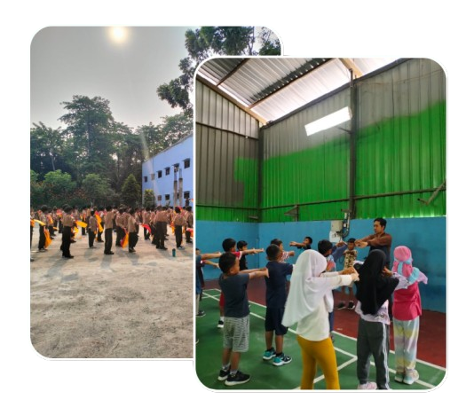
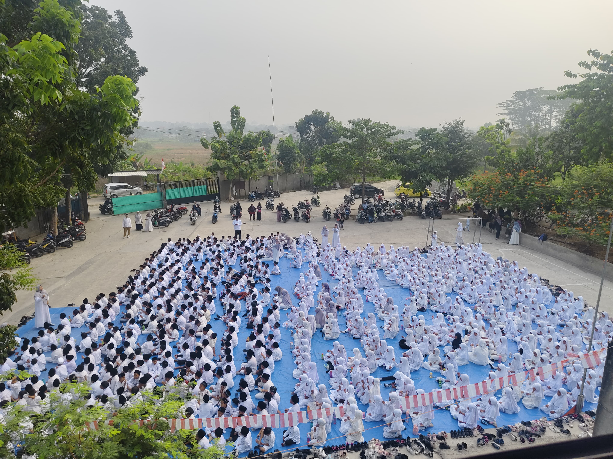

BERMAIN. MENGEKSPLOR. BELAJAR.
Mari Bersama Kami Mewujudkan Generasi Qur'ani dan solusi bagi semua kalangan
Telah Dibuka PPDB SDIT As- Salam 2025-2026
WhatsApp PPDB Online


Berawal dari kelompok pengajian/Majlis ta’lim As-Salam yang dimonitori dan dibawah pimpinan Ibu Hj. In Hendarni Sutaryo yang begitu peduli terhadap perkembangan pendidikan anak-anak yang merupakan generasi penerus bangsa, bahwa maju mundurnya suatu bangsa terletak pada generasi penerusnya. Oleh karena itu yayasan As-Salam berusaha mengedepankan pendidikan yang berwawasan islami dengan mengangkat nilai-nilai keislaman dan menonjolkan akhlak yang mulia sebagaimana yang dicontohkan oleh Rasulullah SAW dan keluarganya beserta para sahabatnya.
Beberapa fasilitas utama yang sekolah As-Salam miliki untuk mendukung pembelajaran
Proyektor, Perangkat Audio, Monitor, Webcam,
dll untuk membantu proses belajar
Sebagai Sekolah Adiwiyata, kami mendorong
terciptanya kesadaran dalam upaya
pelestarian lingkungan hidup
Lapangan untuk olahraga dan kegiatan lain
yang melibatkan siswa
Kantin yang nyaman sebagai lokasi makan
dan minum siswa, guru dan pegawai
Masjid yang luas dan bersih bisa digunakan
oleh siswa, guru, pegawai dan warga sekitar
Lab. Komputer sebagai media pembelajaran
komputer dan teknologi bagi siswa
Ruang kelas yang nyaman membantu siswa lebih
semangat dan termotivasi untuk belajar
Dan masih banyak fasilitas lainnya untuk
seluruh warga sekolah